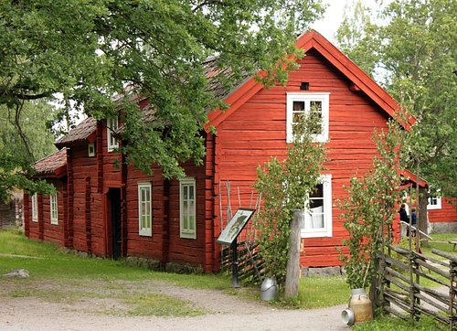
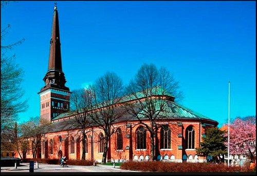
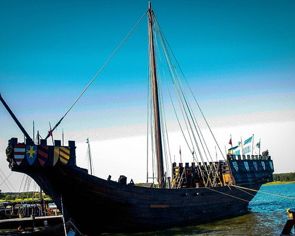
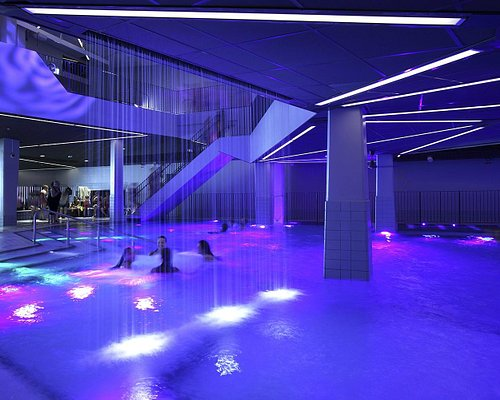
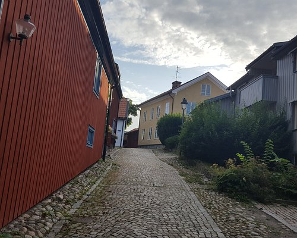
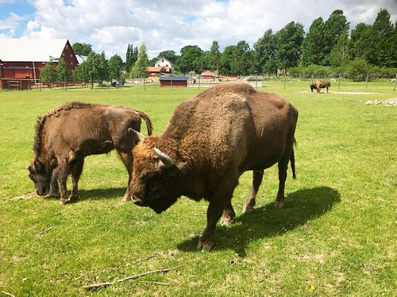

Den stora gravhögen "Anundshögen" anses vara Sveriges största gravhög. Den byggdes någon gång under tiden 500–1050 e. Kr, och bildar ett storslaget monument tillsammans med två närliggande skeppssättningar. Runtom finns ett stort gravfält. Platsen har länge varit en samlingsplats och knutpunkt för kommunikationer. Under järnåldern markerades vägen förbi platsen med resta stenar och ett unikt runstensmonument. Samma väg användes under Eriksgatan på medeltiden, då Anundshög utgjorde tingsplats.
Vallby Friluftsmuseum visar västmanländsk kulturhistoria. Här finns levande samlingar av växter och djur, fornlämningar och insamlade byggnader med föremål som tillsammans ger en upplevelse av livet förr.
På 1100-talet byggdes den första domkyrkan, av gråsten. 1244 anlades ett dominikanerkloster, där Västerås Stadshus ligger idag, och vid samma tid började man att bygga ut domkyrkan med tegel. Den äldsta, västra delen återinvigdes den 16 augusti, enligt traditionen år 1271. På 1300- och 1400-talen byggdes kyrkan ut i alla väderstreck och fick sin nuvarande storlek 1517, 93 meter lång. Tornet är över hundra meter högt.
Västerås historiska skeppsmuseum är ett maritimt museum, beläget vid Frösåkers brygga cirka två mil öster om Västerås. Museet har ett 25-tal medeltida träbåtar. De största är koggarna Roter Teufel och Almerekoggen. Där finns flera vikingaskepp. Man kan också se allmogebåtar, snipor, nordlandsbåtar och en kyrkbåt. Alla är sjösatta och ligger vid bryggorna sommartid. Det anordnas rodd- och segelturer för besökande grupper. Här har även byggts nya båtar för att öka ut beståndet.
Redan innan du kliver in genom den pampiga entrén på Kokpunkten actionbad står det klart att detta inte är ett vanligt badhus. Den stora byggnaden som reser sig mot skyarna rymmer hela 1 200 besökare samtidigt och är fylld till bredden och höjden med aktiviteter fördelade på åtta våningar i Västerås. För barnen finns ett barnland med en lagom läskig rutschkana och spännande vattensprutande svampar. För dig som lämnat barnstadiet men behållit leklusten kan räkna med gott om utmaningar, stora bassänger och virvlande upplevelser. Utmana kompisen och se vem som kommer ner snabbast i Double Race.

Slottets isolerade läge på natursköna Ängsön i Mälaren har bidragit till att hålla sägner och traditioner levande. Engsö nämns första gången i ett kungabrev, utfärdat i slutet av 1100-talet. Genom seklerna har de båda släkterna Sparre och Piper byggt om, byggt till och förskönat det medeltida stenhuset. Sitt nuvarande utseende fick slottet på 1740-talet. Engsö slott är känt över hela världen för sina spöken. På slottet, inmurad i väggen kan man se den smala, fem fot långa guldkedjan, som går under namnet Engsökedjan och är omgiven av seklers mystik och vidskepelse. Det finns flera spöken som visar sig på slottet. Bland annat kan man se en kvinnlig skepnad som drar med fötterna genom Kungarummet och in i stora balsalen klockan 8 på kvällen. Man tror att det är Brita Bååt som går igen. Enligt legenden var hon en mycket elak person.

Djäkneberget är ett parkområde strax väster om Västerås innerstad. Området är cirka 500 meter långt och 250 meter brett (cirka tolv hektar). Parken är belägen på en bergshöjd med utsikt över bland annat Domkyrkan, Stadshuset, Skrapan och en del av Mälaren. I anslutning till parken ligger Djäknebergsskolan, en folkskola som invigdes 1894 och som idag inrymmer Västerås folkhögskola samt Västerås Konstskola. Namnet Djäkneberget kommer av djäkne, en lärjunge från det närbelägna gymnasiet (nuvarande Rudbeckianska gymnasiet). Djäknarna hade sina gymnastik- och vapenövningar på berget. Djäknarna firade även Valborgsmässoafton på berget med fyrverkerier och eldar men det upphörde på 1830-talet efter en olycka då två djäknar brändes till döds. Västerås frivilliga skarpskytteförening hade från cirka 1862 sin övningsplats på Djäkneberget.

Västmanlands läns museum är ett regionalt museum i Västmanlands län och drivs av Region Västmanland. Museet beskrivs på följande sätt på Västerås kommuns webbplats: "Länsmuseets uppgift är att fördjupa kunskapen om det västmanländska kulturarvet, väcka opinion, öka insikten om det förflutna och berika perspektiven på samtiden och framtiden". Under många år drevs verksamheten på Västerås slott, där museet hade utställningslokaler, butik, kontor, arkiv och länsbiblioteket. September 2010 flyttade museet till Karlsgatan 2 i centrala Västerås, där det delar lokaler med Västerås konstmuseum. Till länsmuseet hör WestmannaArvet i Hallstahammar, som är föremålsarkiv och vårdstation för museets samlingar. Bland museets samlingar finns Tunaskatten, det enskilt största fynd av forntida guldföremål i en kvinnograv.
KYRKBACKEN ELLER ”BACKARNE” var ursprungligen stadens ytterområde mot norr. Gatunätet med sina slingriga gränder har sedan 1600-talet i stort sett lämnats orört. Genom 1964 års stadsplan skapades förutsättningar för att restaurera och bevara den starkt särpräglade och genuina miljön. Mycket av det gamla Kyrkbacken har därmed bevarats. Gamla hus finns kvar och har restaurerats. Ett flertal byggnader från 1700-talet ger oss en inblick i hur det var att bo här för flera sekel sedan. Nya hus har tillkommit i stilar som blandar nytt och gammalt. Restaureringen genomfördes av Västerås stad genom Byggnads AB Mimer och av privata fastighetsägare. Historisk har Kyrkbacken varit uppdelat i tre delar. Längst söderut bodde i stor utsträckning kyrkans personal. Norr därom var det i huvudsak hantverkare och längst norrut bodde dagarbetare samt stadens bödel.
Passa på att besöka Kungsbyn som är en rolig plats för barn och lärorik för vuxna. Här får du uppleva djuren på riktigt nära håll och träffa allt från lemurer och kameler till fågelspindlar och nätpytonormar. På Kungsbyn finns även en bistro där du kan fylla på batterierna med en fika eller en lunch för att orka med ännu en vända ute i parken eller på inomhusavdelningen.